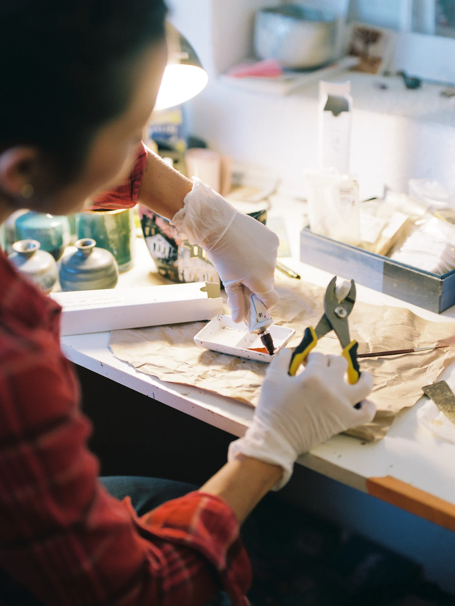
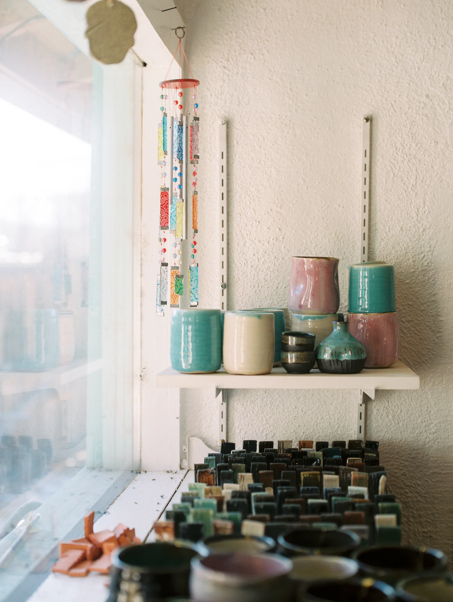
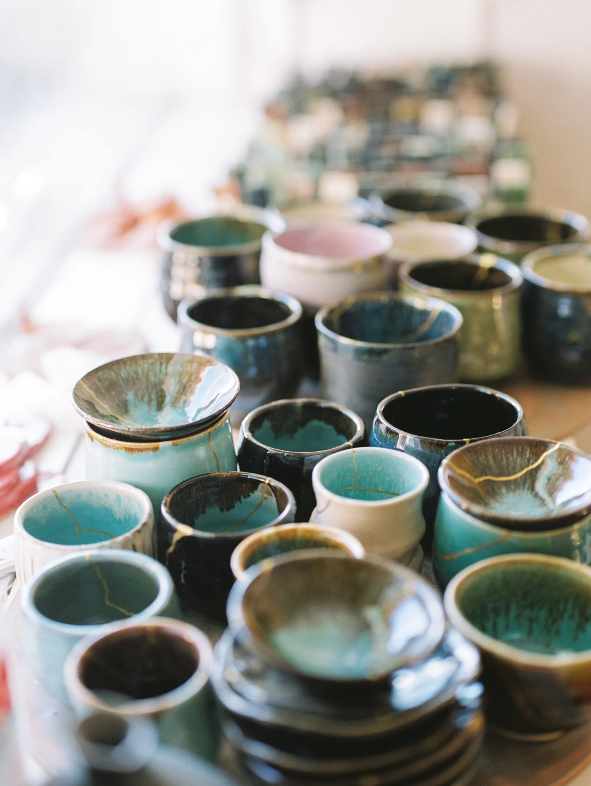
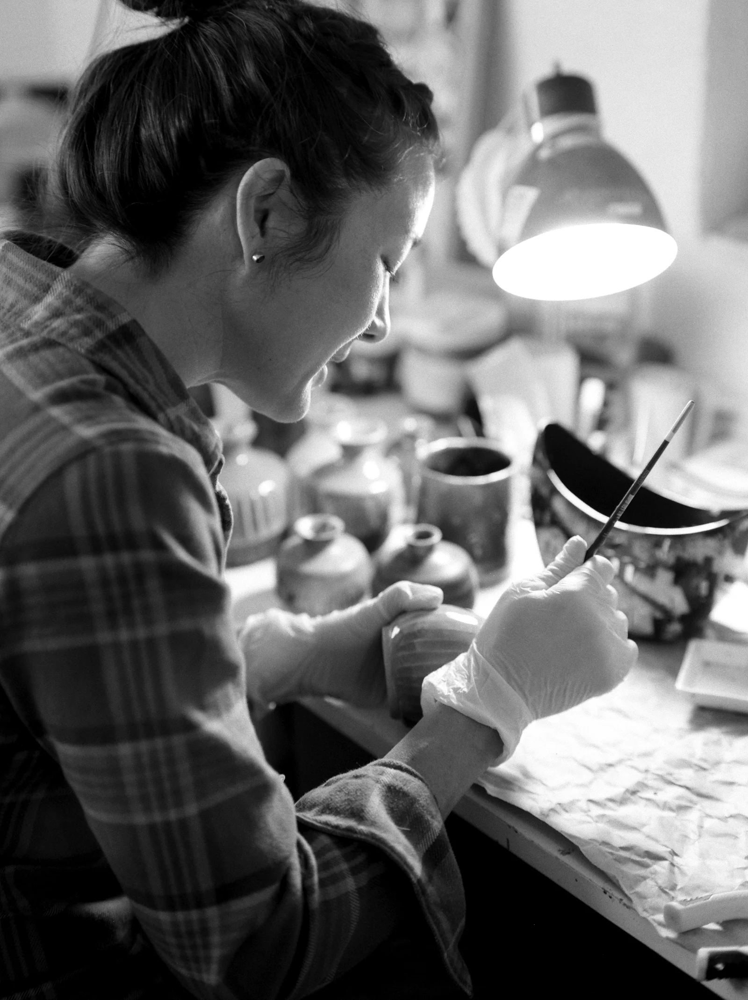
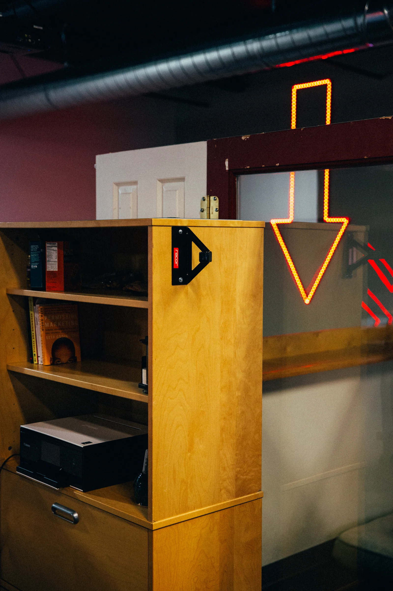
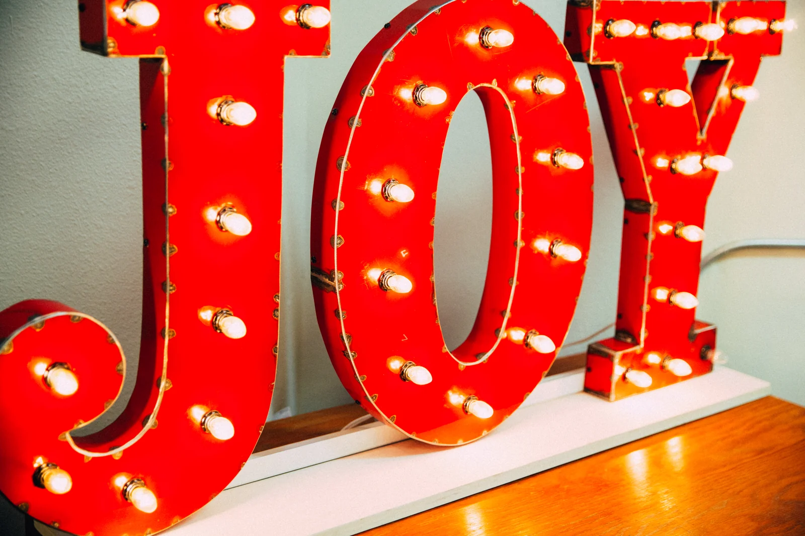

PHOTOGRAPHY COLLECTION
Makers & spaces
Show the work behind the work.
Photography · Environmental storytelling · Content curation
Environmental photography · Process and detail images · Visual story sequencing · Curated content collection

Enlarge image
Enlarge image
Enlarge image
Enlarge image
Enlarge image
Enlarge imageTHE THINKING
Context, craft,
and delivery.
The context
A workspace communicates through objects, light, materials, and people in motion. This collection looks at those details as part of the story of a creative business.
My contribution
The selection pairs environmental photographs with closer observations of making and material. It gives a viewer both the atmosphere of a place and a sense of the work happening there.
Making the work useful
The collection is curated from the supplied photography archive. The emphasis is visual storytelling and selection across scenes, not a claim that every image belonged to one assignment.